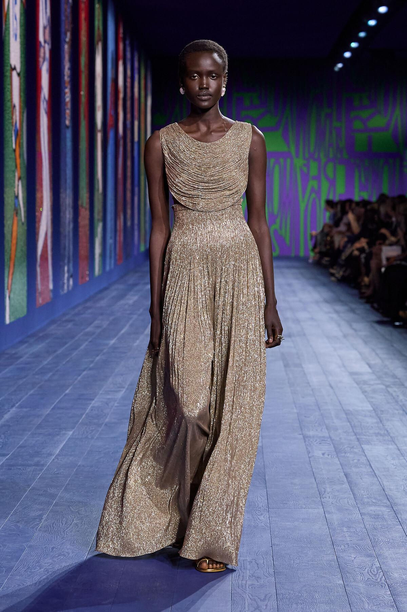

EL ARTE DE CREAR
HAUTE COUTURE

MODA HECHA ARTE
La alta costura representa la creatividad, el trabajo artesanal y la exclusividad. Dior destaca por sus vestidos elaborados con detalles cuidadosamente confeccionados, telas especiales, bordados y diseños únicos.
DETALLES QUE HACEN LA DIFERENCIA
Cada diseño requiere dedicación, precisión y creatividad. Los bordados, las telas y las formas convierten cada pieza en una expresión artística que refleja la identidad de Dior.